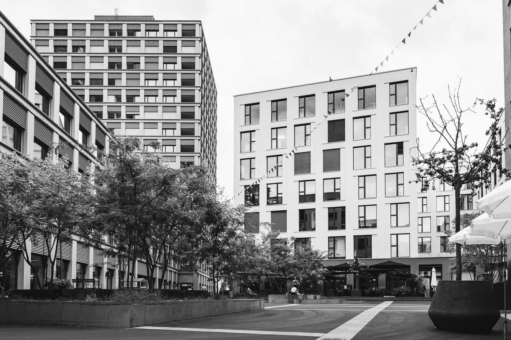

Am Mattenhof, Kriens
Das Quartier Mattenhof in Luzern Süd profitierte von seiner zentralen Lage und der direkten ÖV-Anbindung über den Bahnhof Kriens Mattenhof. Mit 129 Mietwohnungen sowie über 21’000 m² Geschäfts-, Verkaufs- und Hotelflächen transformierte sich die ehemals gewerbliche Randzone zu einem dichten, vielfältig genutzten urbanen Zentrum.
Die Architektur spiegelt diese Nutzung wider: Breitere Sockelgeschosse für Gewerbe und Dienstleistungen sorgen für belebte Erdgeschosszonen und Strassenräume. In den oberen Etagen reduzieren Rückstaffelungen die Gebäudemassigkeit, schaffen Freiräume sowie Terrassen und optimieren Belichtung und Belüftung der Wohnungen. Gemeinschaftlich nutzbare Gründächer ergänzen das Freiraumangebot im dichten Quartier.
Auch studiomatt ist seit 2020 im Mattenhof beheimatet.